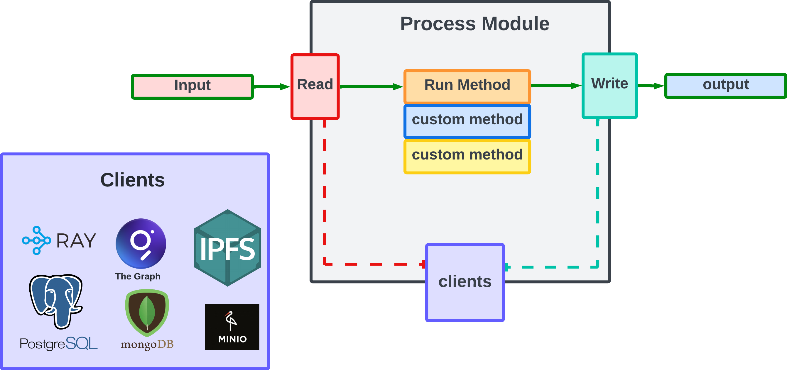
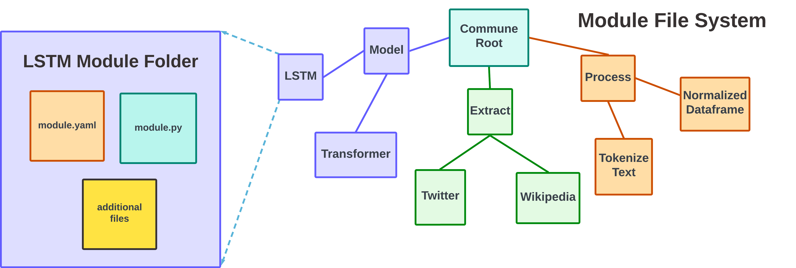
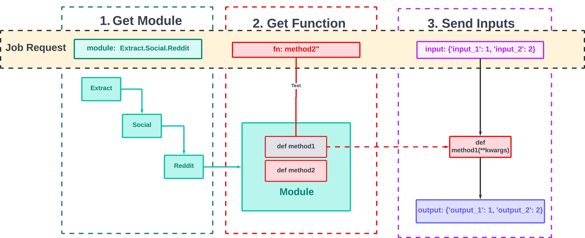
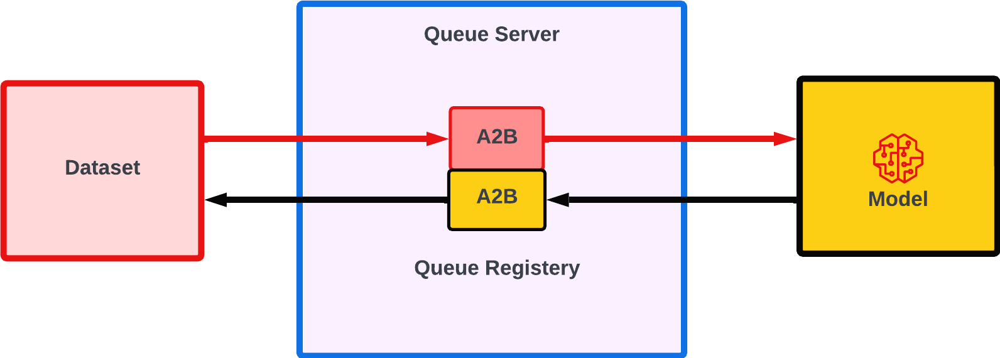
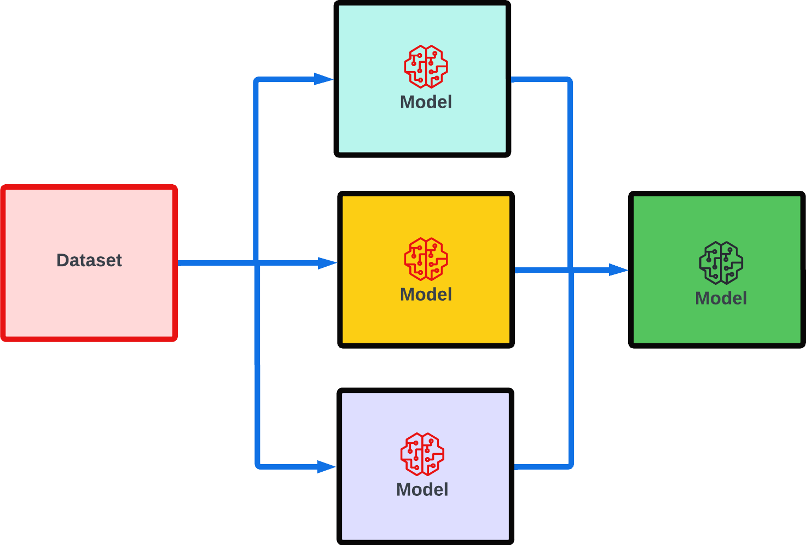
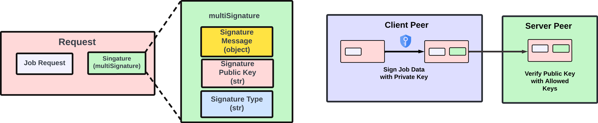
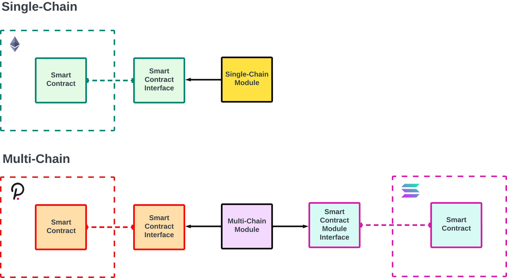

Modulus: An Open Modular Design for Interoperable
and Reusable Machine Learning
Salvatore Vivona1,2 and Luca Vivona1
1commune.ai
2Algovera.ai
Abstract
Modulus provides an open framework for developers to create modular, inter-
operable modules. These modules are designed to be modular (surprise?), reusable
and inter-operable locally and remotely via peer to peer communication protocols.
Modules are lightweight and general enough to wrap over any machine learning tool.
Developers can also organize modules into a module file system, representing their
own module hub. Developers can also expose their modules as public endpoints
through their local peer, and can restrict access based on their accounts signature.
Modulus is by design open source and does not rely on any tokenomics, allowing
developers to monetize their public endpoints through any tokenized asset including
their own.
1
Introduction
Sharing is caring, especially in machine learning. However, many of the models and pipelines are not
very reusable, requiring additional tedious effort towards interoperability. This lack of interoperability
allowed for platforms fill this void (ZenML, Lightning, Fast.ai, Huggingface). These companies
attempt to connect different tools into one cohesive tool-set, striving to be the one platform to rule
them all. Despite many platforms proclaiming their support for open ML, many do not fully open
source their code-base, and some monetize their community’s intellectual property to cooperate
clients . Platforms can also lock-in developers, as they build tools that are fully compatible with their
ecosystem and not competitors. Paradoxically, these platforms create walled gardens that section
developers from effectively collaborating. Modulus attempts replace walled gardens with a wall-less
garden; a fully open source protocol for developers to create, connect and share machine learning
modules . Modulus provides modules templates, allowing tools to be reusable, inter-operable, and
connectable via local or remote messaging protocols ( TCP, UDP, gRPC ). Developers are provided
with their own module hub, where they can organize share and monetize modules.
2
Methods
Modulus is strongly opinionated in being un-opinionated. The design attempts to serve as an inter
operable layer that allows users to easily wrap over any machine learning or processing with its
module block.
2.1
Module Block
A module block is a process that allows for multiple inputs and outputs. It can receive inputs
and write outputs via its set of clients which connect to various servers/processes outside of the
module. These servers involve local/remote databases (Redis, MongoDB, Postgres), API endpoints
33rd Conference on Neural Information Processing Systems (NeurIPS 2019), Vancouver, Canada.


(GraphQL/REST), peer to peer connections (gRPC[6], IPFS[1] , Arweave[14]) and customised
connections. A typical module run-time involves three steps: 1. read preliminary data from a clients
(loading a dataset, model) 2. run some custom logic over the read data into output data 3. write
output data to clients. If the read, run, write flow is too limiting, users can build their own custom
methods as they would with a normal class .
Figure 1: Illustration of a module’s forward pass
3
Module File-system
Each module is represented as a folder. The folder contains the main python script (module.py) and its
configuration file (module.yaml). This structure allows modules to be inter-operable with practically
any asset that can be represented as these two files. For instance, you can wrap a Huggingface
model/Dataset with a module, and feed it with tweets from a model wrapped over a Twitter API.
The module folder can also have additional files and dependencies. This can include other modules
(folders), Python files, Dockerfiles, pip/conda environment files, Helm charts, . These files help
ensure that the module is portable wherein its run-time can be compatible with multiple machines.
Figure 2: module tree containing a file-system of modules.
Module folders can be constructed into a single file system representing an ontology/tree of modules.
The tree helps developers organize modules based on their purpose and classification (model, dataset,
process) .The module tree can also be synonymous to a mono-repo, and is intended to contain modules
2

serving across multiple projects. This encourages developers to have their own personal module tree
mono-repo, where they can easily reuse and share modules for new projects.
3.1
Module Manager API
The module manager allows developers to manage running modules and submit tasks to these
modules. The module manager is also responsible for monitoring and managing the modules’
resource consumption. At the moment, the total module consumption is tracked in terms of disk
used, number of CPUs, main memory and GPU memory. When a new module needs to replace an
existing module, the outgoing module marked with the lowest priority score. This priority score is
defined by the user, and defaults to first in first out (FIFO) . Launched modules are also provided with
public/private key pairs. These module keys are used for assigning each module an identity that is
verified with their private key signature. Modulus also uses multi-format schemes to accommodate
the verification and identity that is agnostic to the key type (ie, ECDSA [11], AES[2]). This allows
for modules to have identities as account on multiple block-chains, having a key pair for each chain.
This identity layer can also limit external peers from accessing publicly exposed modules.
3.2
Launching a Module
A module can be initialized by knowing its module path. If no configuration is specified, the module’s
default YAML file is used (module.yaml). Users can also override the default configuration with an
override dictionary mapping the configuration key path (‘dataset.batchsize’=12) with the replacing
value. Modules can be initialized as ray actors [9]. Ray actors are class objects that can be deployed
as daemon processes over a a local or Kubernetes cluster. When deployed, each module actor is
given a name based on its module path. If more than one of the same module is deployed (ie. a
pool of actors), a tag is used to avoid name conflicts (model.transformer-1 and model.transformer-2).
These processes live until they are killed (ray.kill) allowing for developers to reuse already deployed
modules as remote processes.
3.3
Calling a Module
Jobs are submitted through a REST API giving access to the module manager. The user can input a
JSON serialized python dictionary involving 3 key components: 1. The module’s path (string), 2.
the function attribute (string) , and 3. The functions inputs (list/args or dictionary/kwargs). If
the module is not running in a ray cluster, a new module will be spawned.
Figure 3: Illustration of API call.
3.4
Connecting Modules
Connecting modules occurs locally or over the wire with modules located on an external peer.
Messaging between peers occur through the queue server.
3.5
Queue Server
The queue server is a special module that is responsible for managing a dictionary of Asyncio queues
[7]. This allows for modules to access each other through putting and getting objects from a global
3


queue. By default, each module has an input and output queue, where the queue’s key is defined
by its module path, suffixed by the queue direction. For instance, module "model.transformer"
would have an input and output queue under "model.transformer.in"and "model.transformer.out".
This is not strict and modules can create their own custom names for queues for specific use cases.
However, allowing for a default naming of queues makes it simple for developers to chain modules
knowing their names.
Figure 4: Illustration of a Queue Server
4
Module Pipeline
Queue servers connect modules through sending and receiving objects in their key registered queue.
An example of this can be one or many dataset modules sending training batches to a queue for
a model module to asynchronously receive and train on. Another example could be having an
aggregator model receive the predictions of many models for assembling. Allowing for modules to
synchronize on queue’s makes it simple for modules to inter operate in many complex forms.
Figure 5: Illustration of a general pipeline of interconnecting modules.
4.1
Connecting Modules over the Wire
The modulus API allows for external users to run module actors locally over JSON gRPC [6] . This
involves user A sending a request to user B’s machine, which is placed in a request queue before it is
processed by the module. Some connections may require authentication signatures from requesting
peers. This allows for the server to limit access to accounts they trust. Upon verification, the module
returns a response containing a JSON serialize response.
4.2
Module Access Control
Module access control allows developers to expose their module API to trusted accounts. These
accounts can be collaborators, friends, family and patrons who pay for access. Verification is done
through having the client peer sign a string containing a UTC timestamp and its public key address,
with the key type. This multi format is used to accommodate for multiple key types for the purpose
of agnosticism [5]. if the message was signed by a trusted peer , the server should be able to proceed
the API call knowing its a trustful client. This form of control allows developers to monetize their
endpoints to patrons. Developers can create custom payment schema that fit their use-case, and
can charge in whatever token they desire. This avoids developers from being locked in to any
4


specific tokenomic structure, giving full financial autonomy. One consideration is that peers may not
authenticate frequently to avoid network costs. Each pair of peers can decide their own verification
depending on their needs. This can be involve some situations that require more security to have
more frequent verification, with the frequency of verification’s drop proportionally to the level of
trust between two peers.
Figure 6: Authentication process in a server module verifying a client module.
4.3
Smart Contracts
Modulus uses python libraries that interface with different block-chains. These include web3(EVM)
[4], substrate (Polkadot) [10], CosmosSDK [3], and solona-py (Solona) [12]. These smart contract
interfaces can be wrapped by a module, allowing for smart contracts to interact with other non-smart
contract modules . For example, one module can predict the price of Ethereum, send its prediction to
a module infer-facing with a smart contract to trigger to swap Ethereum for USDC on Sushiswap’s
decentralized exchange. Modules can also connect different smart contracts across different chains,
allowing for customize cross chain synchronization for python developers. We refer to such a process
as smart contract portals, as it involves building a portal synchronizing two smart contracts. This can
be synchronized using one module, or many modules across different peers. Each synchronization
may require multi-signature aggregation before triggering a synchronization state change [8]. In the
limit, the entire state of the smart contracts can be mirrored across multiple chains.
Figure 7: Smart contract interfacing modules
5
4.4
Storing Modules
Recall each module is self-contained inside a folder, containing all of the necessary information
for portability across peers. The folder can be made publicly accessible through IPFS, Arweave,
Ceramic, and Filecoin. Private assets can be encrypted by a private key that is ideally only distributed
to provisioned users who can decrypt the files. This ability to limit accessibility allows users to
monetize their modules as intellectual property. This can include selling assets, period subscription
access , token per call, or profit sharing [13] . In the subscription access example, this involves the
provider revealing a private key for registered users, but expires under specific conditions (ie after
30 days). Because the modules are token agnostic, developers can choose their preferred tokens of
payment, whether its their a stable coin, Ethereum, or their own token.
5
Conclusion
Modulus is a framework that strives towards ensuring users can easily inter-operate and monetize
their assets. The framework is intended to provide full autonomy and intellectual property over
developer assets. This design avoids developers from succumbing to platform lock-ins, breaking
through the walled gardens.
References
[1] Juan Benet. Ipfs-content addressed, versioned, p2p file system. arXiv preprint arXiv:1407.3561,
2014.
[2] Andrey Bogdanov, Dmitry Khovratovich, and Christian Rechberger. Biclique cryptanalysis
of the full aes. In International conference on the theory and application of cryptology and
information security, pages 344–371. Springer, 2011.
[3] cosmos. Cosmos-sdk.
[4] Ethereum. Ethereum/web3.py: A python interface for interacting with the ethereum blockchain
and ecosystem.
[5] Bryan Ford, Pyda Srisuresh, and Dan Kegel. Peer-to-peer communication across network
address translators. In USENIX Annual Technical Conference, General Track, pages 179–192,
2005.
[6] Grpc. Releases · grpc/grpc.
[7] John Hunt. Concurrency with asyncio. In Advanced Guide to Python 3 Programming, pages
407–417. Springer, 2019.
[8] Meenakshi Kansal, Amit Kumar Singh, and Ratna Dutta. Efficient multi-signature scheme
using lattice. The Computer Journal, 65(9):2421–2429, 2022.
[9] Philipp Moritz, Robert Nishihara, Stephanie Wang, Alexey Tumanov, Richard Liaw, Eric Liang,
Melih Elibol, Zongheng Yang, William Paul, Michael I Jordan, et al. Ray: A distributed
framework for emerging {AI} applications. In 13th USENIX Symposium on Operating Systems
Design and Implementation (OSDI 18), pages 561–577, 2018.
[10] parity. py-substrate.
[11] GVS Raju and Rehan Akbani. Elliptic curve cryptosystem and its applications. In SMC’03
Conference Proceedings. 2003 IEEE International Conference on Systems, Man and Cybernetics.
Conference Theme-System Security and Assurance (Cat. No. 03CH37483), volume 2, pages
1540–1543. IEEE, 2003.
[12] solona. Solona python.
[13] Salvatore Vivona. Communal treasuries.
[14] Sam Williams, Viktor Diordiiev, Lev Berman, and Ivan Uemlianin. Arweave: A protocol
for economically sustainable information permanence. Arweave Yellow Paper, www. arweave.
org/yellow-paper. pdf, 2019.
6
Document Outline